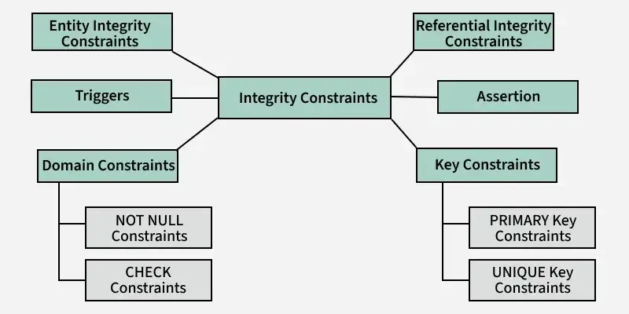

Integrity Constraints :
- Integrity constraints are business rules defined during the schema design phase to ensure data quality. These constraints are hardcoded into the database structure (schema) and are actively enforced by the DBMS engine during every CRUD operation (Create, Read, Update, Delete), ensuring that only valid and consistent data is stored.
- And Integrity constraints also define how different parts of the database connected🟡.
Types of Integrity constraints
- #Domain constraints
- #Entity Integrity constraints
- #Referential integrity constraints
- #Key constraints
- #Assertions
- #Triggers

Domain constraints
Responsibilities : - Define what type of data is allowed in a column and restrict invalid data entry.
Allowed Data Types : 1. string 2. char 3. time 4. integer 5. date 6. currency
Types of Domain Constraints : 1. NOT NULL constraint : Ensures No records can have NULL value. 2. CHECK constraint : This Constraint Checks for any specified condition over any attribute.
Entity Integrity constraints
Responsibilities : - A table can contain null value in it except primary key field.
Key Features of Entity Integrity Constraints: - Uniqueness: The primary key value must be unique for each row in the table. No duplicate entries are allowed in the primary key column. - NOT NULL: The primary key column cannot contain NULL values, as every row must have a valid identifier. - Essential for Table Design: Ensures that every record in the table can be uniquely identified, preventing ambiguity.
Referential integrity constraints
Responsibilities : - This ensures the relationship between tables remain consistent by enforce that a foreign key in one table must either match a value in the referenced primary key or another table or be NULL.
Key constraints
Responsibilities : - Key constraints ensure that certain columns or combinations of columns in a table uniquely identify each row. - These rules are essential for maintaining data integrity and preventing duplicate or ambiguous records.
Why Key Constraints Are Important ? - Prevent Duplicates: Ensure unique identification of rows. - Maintain Relationships: Enable proper linking between tables (via foreign keys). - Enforce Data Integrity: Prevent invalid or inconsistent data.
Primary key constraints : - It states that the primary key attributes are required to be unique and not null. Unique Key Constraint*** : - The Unique key constraint in DBMS ensures that all values in a specified column (or group of columns) are distinct across the table. - It prevents duplicate entries, maintaining data integrity, 🟡but unlike the primary key, it allows one NULL value.